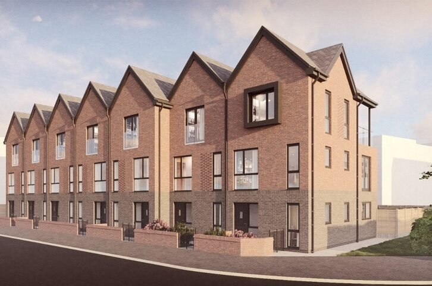
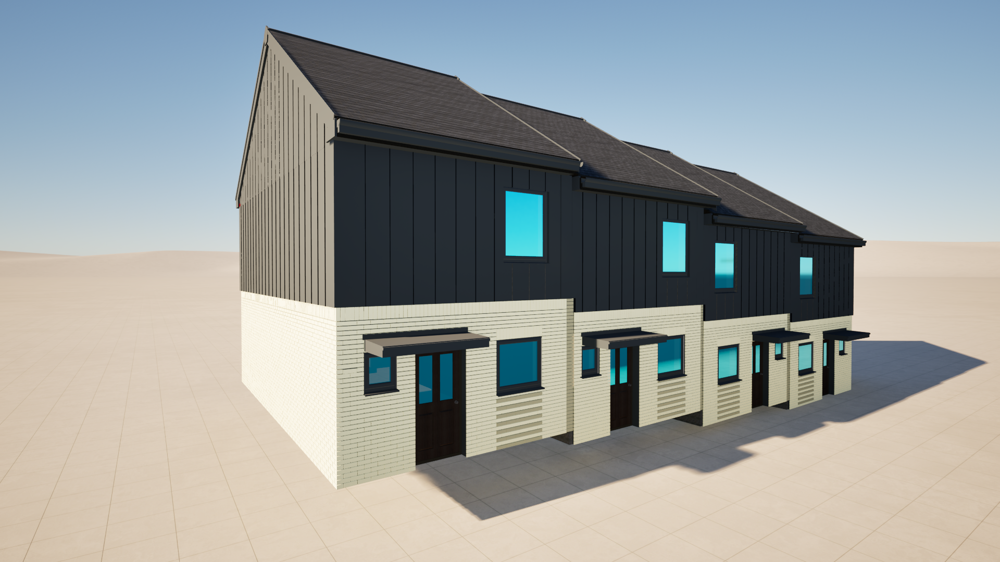
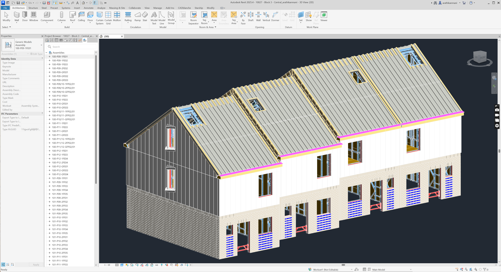
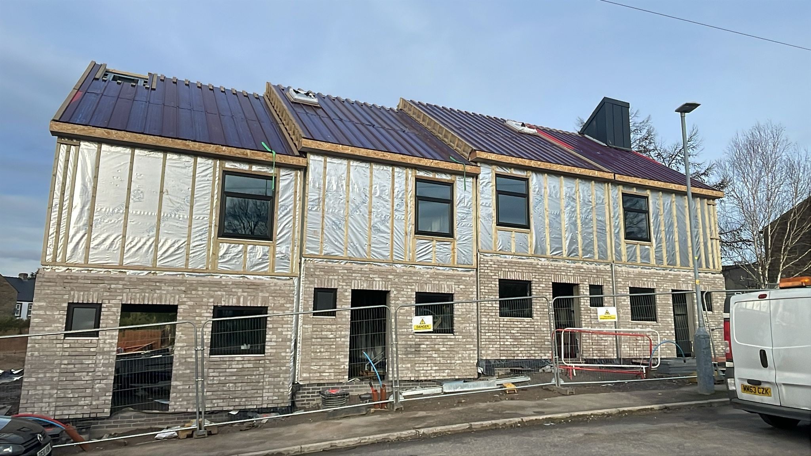
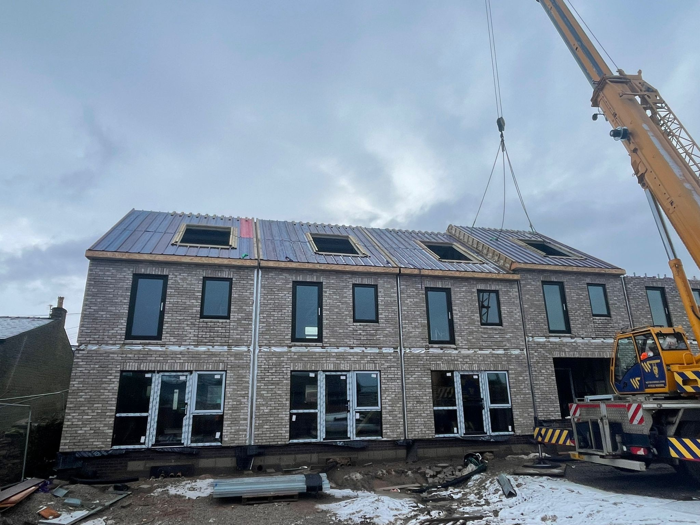
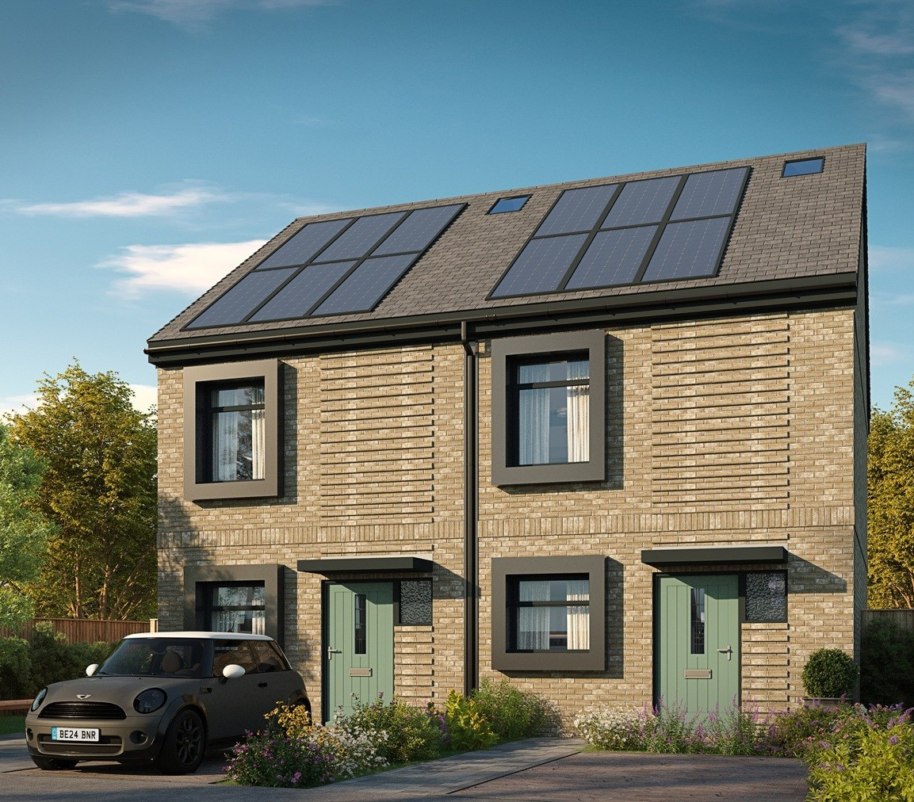

Technical detailing
Developing details for bespoke elements, junctions and architectural interfaces.
TECHNICAL DESIGN01 | PROFESSIONAL WORK
Residential Development · Wirral, UK
Technical design and BIM coordination for 13 zero-carbon homes, including bespoke façade interfaces, projecting windows and construction-focused detailing.

PROJECT
Atherton Grove is a development of 13 zero-carbon homes progressing through installation. The project features a brick-slip façade system using Vandersanden products, requiring careful coordination between the supporting structure, external envelope and architectural finishes.
Bespoke elements include chimney assemblies, projecting windows and a volumetric external cladding pod. These interfaces require coordinated detailing of structural connections, waterproofing, façade build-ups and installation requirements.
My role focuses on developing architectural technical details and using Revit models to review interfaces, refine build-ups and resolve potential conflicts. This supports Design for Manufacture and Assembly (DfMA), buildability and accurate on-site installation.
MY CONTRIBUTION
DESIGN → DELIVERY
Developing details for bespoke elements, junctions and architectural interfaces.
TECHNICAL DESIGNCoordinating structural, waterproofing and façade requirements across building components.
DESIGN COORDINATIONReviewing model interfaces and build-ups to identify potential design conflicts.
BIM WORKFLOWPreparing coordinated information for manufacture, assembly and installation.
CONSTRUCTION DELIVERYSELECTED IMAGES
Selected views of the development, design process, BIM work and site progress. Images illustrate the relationship between technical design and delivery.






Selected imagery for portfolio purposes. Confidential drawings and project-specific technical information have been excluded.
CONTINUE EXPLORING